new_stations <- stations$Both %>% filter(!existing) %>%
mutate(line = if_else(startsWith(codes, "J"), "JRL", "CRL Phase 1"))
upgrades <- stations$Both %>% filter(existing) %>%
filter(lines > stations$Existing$lines[match(station_id, stations$Existing$station_id)])
network_labels <- bind_rows(upgrades, new_stations %>%
filter(station_id %in% c("AVIATIONPARK", "SERANGOONNORTH", "NANYANGCRESCENT", "TENGAH")))
network_map <- ggplot() +
geom_sf(data = subzones, fill = "grey97", colour = "grey83", linewidth = 0.15) +
geom_sf(data = stations$Existing, colour = "grey55", size = 1.2) +
geom_sf(data = new_stations, aes(colour = line), size = 2.5) +
geom_sf(data = upgrades, shape = 21, fill = "white", size = 2.6) +
geom_label_repel(data = network_labels, aes(label = station, geometry = geometry),
stat = "sf_coordinates", size = 2.7, seed = 626, min.segment.length = 0, max.overlaps = Inf) +
scale_colour_brewer(palette = "Dark2") +
coord_sf(datum = NA) + labs(colour = NULL, x = NULL, y = NULL,
title = "Where the proposed stations would extend the network",
subtitle = "New locations in colour; outlined stations gain a connecting line")How could the Jurong Region Line and Cross Island Line change where people board trains, and which neighbourhoods would gain closer access?
NoteCode and saved results
The report and summary use the same saved results. Updating the pages does not run the model again. The code shown beside each figure comes from the R script that produced it. To rerun the analysis, follow the run instructions. The R session information lists the software versions used.
1 Introduction
When a new station opens closer to home or work, some passengers may change where they board. That is one of the changes JRL and CRL could bring. The Jurong Region Line will serve western Singapore, while the first phase of the Cross Island Line will run from Aviation Park to Bright Hill. LTA’s rail development update
This report asks where passengers might board after the new lines open, and which neighbourhoods would be closer to a station. A station could have modest boarding numbers and still save nearby residents a long trip to reach the railway. I therefore compare both ridership and access from homes.
Throughout the report, an entry means the start of a rail journey at a station. A station’s catchment is the area it draws passengers from. Catchments can overlap because people in the same neighbourhood may choose different stations.
1.1 Study questions
- What helps explain the differences in weekday boardings between existing stations?
- Where could JRL and CRL Phase 1 draw passengers, and how would nearby catchments change?
- Which neighbourhoods gain closer access, including those with more older residents?
I compare today’s network with the handout’s 24 JRL stations and 12 CRL Phase 1 stations, CR2 to CR13, added. The CRL section runs from Aviation Park to Bright Hill. In each comparison, the population, workplaces and total number of rail journeys stay the same. This lets us see how existing journeys might shift between stations. Future housing growth and extra journeys encouraged by the new lines would need a separate forecast.
Hume opened in February 2025, years after its station shell was built. Its history raises a useful question for this study: how well can current conditions tell us about demand at a new station? I check the model against recently opened stations and look at the proposed stations with low estimates as well as the busiest ones. LTA: Hume station
| Handout objective | Where it is addressed |
|---|---|
| Fit a model of station choice | Station choice and validation |
| Predict proposed stations’ entries | JRL and CRL estimates |
| Examine effects on existing stations | Station changes and catchments |
The neighbourhood access comparison then looks at the homes served by these changes, including areas with more older residents.
2 Data and study area
2.1 A common date for the comparison
September 2026 provides the starting picture of station use. I count entries across the whole weekday, so the data include journeys starting near homes, workplaces and shops. Each journey is counted once, where the passenger enters the railway. August provides a check on whether the model also works in another month.
The passenger data tell us how busy each station is. To understand those differences and estimate use at future stations, I also need to know where people live, where activities are located and which transport connections are nearby.
| Source | Use in this study |
|---|---|
| LTA passenger volumes | Journeys between stations, added up to give weekday entries at each station |
| LTA geospatial data and station codes | September 2026 station locations, operating bus stops and station names |
| Future station coordinates | Proposed locations, checked against LTA’s line descriptions |
| SingStat geographic distribution | June 2026 residents by age and dwelling type |
| SingStat workplace locations, GHS 2025 | How many employed residents work in each planning area |
| LTA bus routes and services | Direct bus alternatives and daytime service frequencies, retrieved 4 November 2026 |
| URA subzone boundaries | Subzone locations and boundaries |
| HDB buildings and Property Information | Completed residential blocks and dwelling counts |
| OpenStreetMap, distributed by Geofabrik | Shops, workplaces and other facilities, plus addresses for matching housing records |
These sources come from different dates. The population table uses Master Plan 2025, while the available map has 2019 boundaries. All 332 subzone names match, so I use those boundaries as an approximate map of the population. The population counts are rounded to the nearest ten.
The building outlines are from November 2025, and the HDB property records extend through December 2025. OpenStreetMap (OSM) locations and bus routes were downloaded in November 2026. They give a slightly later picture of the places and services around stations than the September passenger data.
The workplace survey covers employed residents aged 15 and above and uses the same 2019 planning areas. Its counts are rounded to the nearest hundred. I can place 2,071,100 workers in 44 named planning areas. This leaves out non-resident workers, people working from home or without a fixed workplace, and the survey’s combined “other areas or outside Singapore” category. These gaps are especially relevant when we examine stations serving employment areas.
For activities, I count shops, offices, education, healthcare, food and leisure facilities in each subzone. These mapped places are called points of interest, or POIs. I remove records with the same name and category within 50 metres to avoid counting the same place twice. I also test whether the ground area of 282 mapped office buildings describes workplace activity better than a simple count. Overlapping building outlines are merged before measuring the area.
All distance calculations use Singapore’s SVY21 coordinate system (EPSG:3414), so distances can be measured in metres.
2.2 Matching stations and homes
Before comparing the networks, I need to count interchanges consistently. An interchange is one station, even when several lines serve it. The 36 stations listed for the new lines therefore add 29 new locations, while seven existing stations gain a connection. Circle Line 6 already belongs in the September network because it opened in July 2026. The later JRL station JS2A is outside the handout’s list. LTA: Circle Line 6
Some station codes also need matching. The passenger files call Marina Bay CC33 and Bayfront CC34; the older station workbook calls them CE2 and CE1. After matching these codes, all 184 stations have observations in both months, and the journey totals are unchanged. LTA station listings
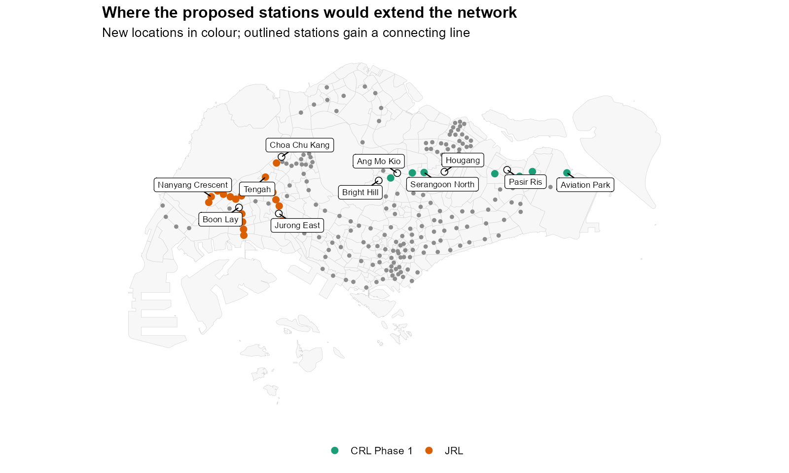
The proposed stations extend into different parts of the island. Interchanges also gain connections, although their physical location stays the same in this comparison.
To measure access from homes, I match each HDB property record to a building on the map using its block and street. OSM addresses help check these matches: the postal code and block number must agree, and the locations must be within 150 metres. Where street names use different codes, I accept a match only when at least 90% of checked addresses agree. Unclear matches are left out.
This locates 9,782 blocks containing 1,055,134 homes, or 89.5% of the homes in the property table. All housing-access percentages below refer to these mapped homes.
2.3 Where the housing sample is incomplete
review$housing_quality %>%
filter(bldg_contract_town %in% c("TG", "BM")) %>%
transmute(Town = recode(bldg_contract_town, TG = "Tengah", BM = "Bukit Merah"),
`All dwellings` = fmt(dwellings), Matched = fmt(matched),
`Matched share` = pct(share)) %>% knitr::kable()| Town | All dwellings | Matched | Matched share |
|---|---|---|---|
| Tengah | 16,318 | 9,343 | 57.3% |
| Bukit Merah | 53,070 | 37,576 | 70.8% |
The missing homes are unevenly spread. I can map only 57.3% of Tengah’s homes and 70.8% of Bukit Merah’s. This matters later when we look at Garden in Tengah and Telok Blangah Way in Bukit Merah. Their results describe the homes we could locate; including the missing homes could change the size of the gains or gaps.
review$housing_decades %>%
transmute(`Completion decade` = paste0(decade, "s"), Dwellings = fmt(dwellings),
`Matched share` = pct(matched_share)) %>% knitr::kable()| Completion decade | Dwellings | Matched share |
|---|---|---|
| 1930s | 778 | 54.4% |
| 1940s | 556 | 45.9% |
| 1950s | 519 | 96.5% |
| 1960s | 38,316 | 79.6% |
| 1970s | 183,384 | 87.9% |
| 1980s | 303,949 | 94.0% |
| 1990s | 237,522 | 92.6% |
| 2000s | 100,038 | 90.3% |
| 2010s | 202,140 | 89.6% |
| 2020s | 111,954 | 75.9% |
The ridership model uses these locations too. It spreads each subzone’s HDB population across the blocks we could match, keeping the total population unchanged. Where blocks are missing, this gives an approximate picture of where residents live. Residents in other housing types are represented by one point inside their subzone.
quality <- tibble(
Check = c("Station totals in both months", "Population / boundary names", "Activity POIs after deduplication", "Named workplace areas"),
Result = c(paste(nrow(ridership$observed), "unique station complexes"),
paste(nrow(prepared$origins), "matched subzones"),
fmt(nrow(prepared$pois)), paste(nrow(context$mapped), "areas")))
knitr::kable(quality)| Check | Result |
|---|---|
| Station totals in both months | 184 unique station complexes |
| Population / boundary names | 332 matched subzones |
| Activity POIs after deduplication | 25,041 |
| Named workplace areas | 44 areas |
These checks confirm that matching station codes has not added or lost journeys, and that placing residents and workers on the map has kept each area’s total intact. For station locations, I use the LTA building outline when its code matches, otherwise the coordinate registry. Each interchange keeps the same map point in every network comparison.
2.4 Tables used in the model
| Table | Contents |
|---|---|
| Existing-network interactions | Each possible starting location paired with every existing station, with distance and a station attraction score |
| Expanded-network interactions | The same starting locations paired with stations after both lines are added |
| Origins | Starting locations, their subzones, residents, facilities, estimated workers and modelled journeys; office area is kept for comparison |
| Destinations | Stations, recorded entries, rail lines, nearby bus stops, direct CBD buses and attraction scores |
These four tables connect places where journeys could start to the stations passengers could choose. “Attraction” is the model’s score for a station’s transport connections, explained in Section 4. Future stations have no recorded entries yet. The 253 office-building points are kept for comparison with an earlier model, but receive no journeys in the selected model, which uses worker counts instead.
existing_pairs <- readRDS("data/take-home-03/derived/existing-network-interactions.rds")
existing_pairs %>% select(origin_id, station_id, attraction, distance) %>%
slice_head(n = 3) %>% knitr::kable(digits = 3, caption = "Existing network: distance in kilometres.")| origin_id | station_id | attraction | distance |
|---|---|---|---|
| D0001 | ADMIRALTY | 13.565 | 9.103 |
| D0001 | ALJUNIED | 13.388 | 7.380 |
| D0001 | ANGMOKIO | 13.388 | 0.438 |
expanded_pairs <- readRDS("data/take-home-03/derived/expanded-network-interactions.rds")
expanded_pairs %>% filter(station_id %in% c("GEKPOH", "SERANGOONNORTH")) %>%
select(origin_id, station_id, attraction, distance) %>% slice_head(n = 3) %>%
knitr::kable(digits = 3, caption = "Expanded network: a sample of new-station pairs.")| origin_id | station_id | attraction | distance |
|---|---|---|---|
| D0001 | GEKPOH | 13.338 | 16.691 |
| D0001 | SERANGOONNORTH | 13.481 | 3.086 |
| D0002 | GEKPOH | 13.338 | 16.663 |
origin_table <- readRDS("data/take-home-03/derived/origins.rds")
origin_table %>% st_drop_geometry() %>%
select(origin_id, subzone_id, residents, activity, employment, market_potential) %>%
slice_head(n = 3) %>% knitr::kable(digits = 1, caption = "Origins: modelled weekday demand, not home addresses of observed passengers.")| origin_id | subzone_id | residents | activity | employment | market_potential |
|---|---|---|---|---|---|
| D0001 | AMSZ01 | 0 | 13 | 1208.2 | 1109.0 |
| D0002 | AMSZ01 | 0 | 3 | 278.8 | 255.9 |
| D0003 | AMSZ01 | 0 | 112 | 10408.9 | 9554.2 |
destination_table <- readRDS("data/take-home-03/derived/destinations.rds")
destination_table %>% st_drop_geometry() %>%
filter(station_id %in% c("HOUGANG", "MARINEPARADE", "SERANGOONNORTH")) %>%
select(station_id, observed_entries, lines, mrt, bus_500, attraction) %>%
knitr::kable(digits = 1, caption = "Destinations: line counts and attraction with both proposed lines.")| station_id | observed_entries | lines | mrt | bus_500 | attraction |
|---|---|---|---|---|---|
| HOUGANG | 30600.8 | 2 | 1 | 19 | 43.0 |
| MARINEPARADE | 10995.0 | 1 | 1 | 14 | 13.2 |
| SERANGOONNORTH | NA | 1 | 1 | 19 | 13.5 |
2.5 Assumptions and modelling decisions
| Decision | Reason and check |
|---|---|
| Count entries throughout the weekday | Includes trips starting near homes and other activities. Check the result against August too. |
| Keep the same number of journeys | Shows how journeys shift between stations. Future development and extra rail trips need separate forecasts. |
| Measure straight-line distances, with a 100 m minimum | Treats current and future stations consistently. Also test minimum distances of 50 m and 250 m. |
| Group starting points in 500 m cells; count bus stops within 500 m | Keeps local detail manageable. Also count bus stops within 400 m and 800 m; starting-point locations remain approximate. |
| Apply the same station-choice rules everywhere | Allows estimates for unopened stations. Separately test the assumed benefit of gaining a rail line. |
| Test five geographical groups in turn | Fit the model using four groups, then predict the fifth. Repeat with different group boundaries. |
| Choose the lowest prediction error (WAPE) | Prefer the simpler model when its error is within 1% of the best score. WAPE is explained in Section 4. |
| Combine sources from different dates | Population: June 2026; workplaces: 2025; housing: late 2025; boundaries: 2019; OSM and bus routes: November 2026. Together they give an approximate picture of September’s surroundings. |
The R workflow notes link the preparation, model and plotting scripts in their run order.
3 Where passengers enter the network today
3.1 Counting a boarding once
With the station records matched, I can compare how busy they are. The origin-destination (OD) data give the start and end stations of each journey. I add up journeys by starting station across all weekday hours, then divide by the number of weekdays excluding public holidays: 22 in September and 20 in August. MOM’s 2026 holiday calendar
ridership$entries$September %>%
select(station_id, monthly_entries, weekdays, entries) %>%
slice_head(n = 3) %>% knitr::kable(digits = 1)| station_id | monthly_entries | weekdays | entries |
|---|---|---|---|
| ADMIRALTY | 958393 | 22 | 43563.3 |
| ALJUNIED | 499519 | 22 | 22705.4 |
| ANGMOKIO | 901712 | 22 | 40986.9 |
September records 66,784,543 weekday journeys, equivalent to 3,035,661 entries on an average weekday. August’s daily average is 3,142,318. September has more journeys across the whole month because it has two more working days; its daily average is 3.4% lower.
observed_map <- ggplot() +
geom_sf(data = subzones, fill = "grey97", colour = "grey85", linewidth = 0.15) +
geom_sf(data = ridership$observed, aes(size = entries, colour = entries), alpha = 0.8) +
scale_colour_viridis_c(labels = scales::label_comma(), breaks = scales::breaks_pretty(n = 3),
guide = guide_colourbar(barwidth = grid::unit(6, "cm"))) +
scale_size_area(max_size = 10, guide = "none") + coord_sf(datum = NA) +
labs(colour = "Weekday entries", size = "Weekday entries", x = NULL, y = NULL,
title = "Where passengers enter the network", subtitle = "Average weekday, September 2026")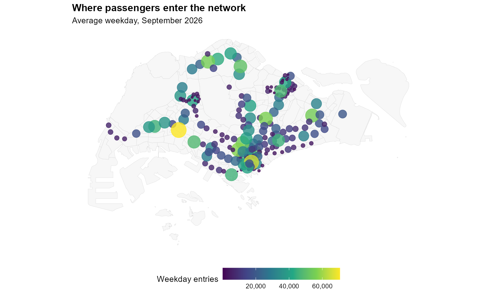
Busy stations appear in both the city centre and the larger residential towns. Since we count the whole day, a station’s entries can include people leaving work or shops as well as people setting out from home.
ranking_chart <- ridership$observed %>% st_drop_geometry() %>%
slice_max(entries, n = 12) %>% ggplot(aes(entries, reorder(station, entries))) +
geom_col(fill = "#237a83", width = 0.7) + scale_x_continuous(labels = scales::label_comma()) +
labs(x = "Average weekday entries", y = NULL, title = "The busiest boarding stations")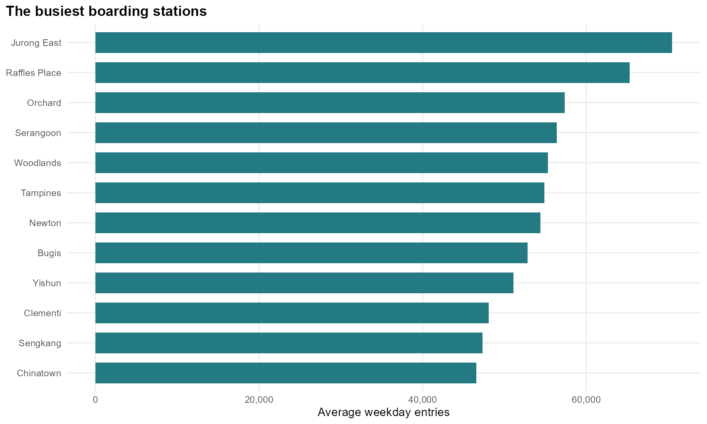
Jurong East has the most entries, at 70,508 per weekday, followed by Raffles Place. Yishun is also among the busiest despite having one rail line. This suggests that rail connections alone will not explain the rankings. The next comparison looks at the homes and workplaces around three stations.
3.2 Three different station settings
examples <- ridership$observed %>%
filter(station_id %in% c("YISHUN", "RAFFLESPLACE", "DHOBYGHAUT"))
examples$dwellings_500 <- vapply(st_is_within_distance(examples, prepared$buildings, dist = 500),
function(i) sum(prepared$buildings$total_dwelling_units[i]), numeric(1))
examples$office_pois_500 <- lengths(st_is_within_distance(
examples, filter(prepared$pois, category == "Offices"), dist = 500))
examples <- st_drop_geometry(examples) %>%
select(station, entries, lines, bus_500, dwellings_500, office_pois_500)| Station | Entries/day | Lines | Bus stops | HDB homes | Office POIs |
|---|---|---|---|---|---|
| Dhoby Ghaut | 31,789 | 3 | 11 | 0 | 7 |
| Raffles Place | 65,290 | 2 | 9 | 0 | 54 |
| Yishun | 51,091 | 1 | 18 | 7,496 | 3 |
Yishun has many mapped HDB homes within 500 metres. Raffles Place has many more office locations and no matched HDB blocks within the same distance. Dhoby Ghaut connects three rail lines, yet has fewer entries than either station. I therefore include nearby residents and activities as well as transport connections in the model. The office column counts locations, not workers; the housing column covers the blocks we could match.
4 Estimating station choice
4.1 Distance, connections and surrounding activity
People in the same neighbourhood may use different stations. The Huff model represents this by giving each station a share of the journeys starting from a place. Nearby stations usually get a larger share, while rail connections and nearby bus stops can make a station more attractive. This follows the idea in station-catchment research that passengers have several alternatives to choose from. Zhu and colleagues, 2021
First, I estimate where journeys could start. Residents help describe trips beginning near home; shops, offices, schools and other facilities help describe trips beginning elsewhere. The model learns how much weight to give each distribution. I also test worker counts, since an area with many small outlets may have fewer workers than an area with a few large offices.
origin_weights <- function(origins, residential_share, office_share = 0, employment_share = 0) {
activity <- origins$activity / sum(origins$activity)
if (office_share > 0) activity <- (1 - office_share) * activity +
office_share * origins$office_area / sum(origins$office_area)
if (employment_share > 0) activity <- (1 - employment_share) * activity +
employment_share * origins$employment / sum(origins$employment)
residential_share * origins$residents / sum(origins$residents) +
(1 - residential_share) * activity
}Hands-on Exercise 8 places each village at one point. I begin that way for each subzone, then test whether more detailed locations improve the predictions. I spread HDB residents across the matched blocks, assigning more residents to blocks with more homes. This assumes the mapped blocks represent the subzone’s HDB population. Other residents stay at the subzone point, as do HDB residents where no blocks could be matched. Facilities use their mapped locations.
ridership$choice_origins %>% st_drop_geometry() %>%
group_by(kind) %>% summarise(locations = n(), residents = sum(residents),
facilities = sum(activity), allocated_workers = sum(employment), .groups = "drop") %>%
knitr::kable(digits = 0)| kind | locations | residents | facilities | allocated_workers |
|---|---|---|---|---|
| activity | 2043 | 0 | 25041 | 2071100 |
| office | 253 | 0 | 0 | 0 |
| residential | 979 | 4240430 | 0 | 0 |
To keep the calculation manageable, I group nearby locations of the same type into 500-metre grid cells within each subzone. Each cell is represented by a centre weighted towards its larger counts. This gives 3,022 residential and activity starting points, with each subzone’s totals unchanged. The office-area model adds a point inside each merged office building. For the catchment maps, I combine the points back into subzones, giving more weight to places with more estimated journeys.
I then measure straight-line distances from these starting points to every station. Distances below 100 metres are treated as 100 metres so that a point almost on top of a station does not dominate the calculation. The later housing-access comparison uses individual blocks and their measured distances.
Each station also receives an attraction score based on its rail lines, nearby bus stops and whether it has MRT service. The model learns one common adjustment for MRT stations compared with LRT-only stops, and applies it to new JRL and CRL stations too. It also learns how strongly line and bus-stop counts affect the score. I add one to the bus-stop count so a station with no nearby stops can still be chosen.
one_origin <- existing_pairs %>% filter(origin_id == first(origin_id))
shares <- MCI::huff.shares(
as.data.frame(one_origin), "origin_id", "station_id", "attraction", "distance",
gamma = 1, lambda = -ridership$fit$parameters["decay"], check_df = FALSE
)
shares %>% select(station_id, p_ij) %>% slice_max(p_ij, n = 3) %>% knitr::kable(digits = 3)| station_id | p_ij |
|---|---|
| ANGMOKIO | 0.705 |
| MAYFLOWER | 0.071 |
| YIOCHUKANG | 0.064 |
The table shows the three most likely station choices from one starting point. I repeat this for every point, multiply each choice probability by that point’s estimated journeys, and add the contributions to each station.
Using the same attraction rule for all stations lets me estimate new ones from their connections. The package’s MCI::huff.fit() function fits a separate score for each existing station, using a distance effect supplied by the analyst. Those scores would need another model to estimate unopened stations. Its mci.fit() function needs observations of which stations people choose from each starting place. Our rail records give boarding and alighting stations, so they do not provide those choices from homes or workplaces. I fit the common rule to station totals and use MCI to calculate choice probabilities. MCI documentation
4.2 What the fitted parameters mean
The parameters below are the numbers the model learns from existing stations. “Fitted” uses all stations. The minimum and maximum come from five checks, each leaving out one geographical group of stations. The next subsection explains how those checks work.
review$parameters %>%
mutate(parameter = recode(parameter, decay = "Distance decay", rail = "Rail lines",
bus = "Bus stops", mrt = "MRT indicator", residential = "Residential weight",
employment = "Employment weight")) %>%
select(Parameter = parameter, Fitted = fitted, `Fold minimum` = low, `Fold maximum` = high) %>%
knitr::kable(digits = 3)| Parameter | Fitted | Fold minimum | Fold maximum |
|---|---|---|---|
| Bus stops | 0.065 | 0.000 | 0.079 |
| Distance decay | 2.634 | 2.644 | 2.699 |
| Employment weight | 0.761 | 0.652 | 1.000 |
| MRT indicator | 2.405 | 2.365 | 2.611 |
| Rail lines | 1.675 | 1.646 | 1.714 |
| Residential weight | 0.357 | 0.319 | 0.513 |
Distance has a strong effect. If a station is twice as far away, it keeps only 16.1% of its choice weight, with everything else unchanged. Having two rail lines instead of one multiplies the attraction score by 3.2. An MRT connection gives a multiplier of 11.1 compared with LRT-only service. The model then compares these weights across all available stations to calculate each one’s share. The multipliers do not translate directly into the same increase in boardings.
Nearby bus stops make a much smaller difference: increasing from 10 to 20 multiplies the attraction score by only 1.04. In one geographical check, the model gives bus stops no extra weight. In another, worker counts receive all the activity weight. These changes show that the fitted relationships depend on which areas the model learns from. The ranges are not confidence intervals, and the relationships do not establish cause and effect.
4.3 Checking the source of the prediction error
A model can fit existing counts closely and still predict other stations poorly. To check this, I start with a simple version using residents and distance, then add activities and connections. Their best prediction error is 55.3%, using the WAPE measure explained below. I then test two changes: distinguishing MRT from LRT-only stations and spreading starting locations within each subzone. I test each separately before combining them.
The choice calculation follows Hands-on Exercise 8 and agrees with MCI::huff.shares(). To learn the parameters, I compare the model’s station totals with recorded entries. The score used for fitting is called Poisson deviance: a smaller score means the predicted counts are closer to the recorded counts. The starting locations behind those journeys remain estimates because the rail data do not identify them.
The model tries different parameter values and keeps the set with the lowest score. Distance must reduce attraction, connections can only increase it or have no effect, and the residential share stays between zero and one.
The fitting function adjusts the total journeys using only the stations available for fitting. Counts from stations being tested are kept out of this step too. A tiny positive minimum keeps the calculation valid when a count is zero.
For each check, I divide stations into five geographical groups, or folds. The model learns from four groups and predicts the fifth without using that group’s recorded entries. Those stations remain available as choices for passengers. I repeat this until every group has been tested, using the same groups for each model.
I compare the predictions using WAPE: add up the size of every station’s error, regardless of whether it is too high or too low, then divide by total recorded entries. Lower is better. I choose the lowest score, keeping the earlier, simpler model if it is within 1% of the best score. Because these checks help choose the model, they are not a separate final test.
The model should also beat simpler guesses. One gives every test station the average entries of the stations used for fitting. Another uses separate averages for MRT and LRT-only stations. A third uses a fixed Huff model with residents only and equal station attraction: a station twice as far away gets one-quarter of the choice weight. In all three, only counts from the fitting groups are used to set the predictions.
review$benchmarks %>%
transmute(Reference = model, MAE = fmt(MAE), RMSE = fmt(RMSE), WAPE = pct(WAPE)) %>%
knitr::kable()| Reference | MAE | RMSE | WAPE |
|---|---|---|---|
| Training-station mean | 12,770 | 15,894 | 77.4% |
| Training mean within MRT / LRT | 11,126 | 14,521 | 67.4% |
| Fixed Huff: residents, equal attraction, decay 2 | 12,986 | 17,133 | 78.7% |
The selected model’s error is 34.7%, compared with 67.4% for the separate MRT/LRT averages. The original residents-and-distance model even performs worse than using one overall average. Adding information about stations and their surroundings is therefore useful, although substantial errors remain.
ridership$performance %>%
transmute(Model = model, Comparison = description, MAE = fmt(MAE),
RMSE = fmt(RMSE), WAPE = pct(WAPE)) %>% knitr::kable()| Model | Comparison | MAE | RMSE | WAPE |
|---|---|---|---|---|
| 1 | Residents and distance | 13,177 | 17,518 | 79.9% |
| 2 | Residents, activities and distance | 10,573 | 13,995 | 64.1% |
| 3 | Add rail and bus connections | 9,120 | 12,719 | 55.3% |
| 4 | Add MRT/LRT distinction | 7,558 | 10,752 | 45.8% |
| 5 | Distribute demand within subzones | 7,217 | 10,080 | 43.7% |
| 6 | Distributed demand + MRT/LRT distinction | 6,335 | 9,645 | 38.4% |
| 7 | Add office footprint area | 6,059 | 9,000 | 36.7% |
| 8 | Use 2025 workplace totals | 5,717 | 8,925 | 34.7% |
| 9 | Office area + direct CBD buses | 6,122 | 9,078 | 37.1% |
| 10 | Workplace totals + direct CBD buses | 5,717 | 8,925 | 34.7% |
The table shows where the improvements come from. Distinguishing MRT from LRT and spreading starting locations within subzones brings WAPE to 38.4%. Adding office ground area lowers it to 36.7%, and using worker counts instead gives 34.7%. Direct bus services add no further improvement, so I use Model 8 for the new-line scenarios.
The table also reports MAE, the average size of a station’s error, and RMSE, which gives larger errors more weight. Both are measured in daily entries per station.
| Type | Observed | Initial prediction | Revised prediction |
|---|---|---|---|
| LRT-only | 121,982 | 373,861 | 110,305 |
| MRT | 2,913,679 | 2,677,347 | 2,659,052 |
The first model predicts roughly three times too many entries at LRT-only stops. The revised total is much closer. Spreading starting locations within a subzone also helps: a station beside the subzone’s centre no longer receives most of its estimated journeys just because everyone was placed at that one point.
Could the remaining error mainly reflect a change between months? Giving stations their August shares of September’s total produces only 2.2% WAPE. The station pattern is quite stable across these two months. The larger Huff error points more towards how the model represents stations and their surroundings. August’s shares help check existing stations, but cannot supply estimates for stations that have not opened.
4.4 The errors have a regional pattern
fold_map <- ggplot() +
geom_sf(data = prepared$subzones, fill = "grey97", colour = "grey85", linewidth = 0.15) +
geom_sf(data = review$stations, aes(colour = factor(fold)), size = 2) +
scale_colour_brewer(palette = "Dark2") + coord_sf(datum = NA) +
labs(colour = "Held-out group", x = NULL, y = NULL,
title = "Five geographical groups for station validation")
review$folds %>%
transmute(Group = fold, Stations = stations, WAPE = pct(WAPE), `Net bias` = pct(bias)) %>%
knitr::kable()| Group | Stations | WAPE | Net bias |
|---|---|---|---|
| 1 | 44 | 24.9% | -13.6% |
| 2 | 70 | 39.9% | -24.7% |
| 3 | 31 | 45.1% | 39.3% |
| 4 | 31 | 27.3% | -10.8% |
| 5 | 8 | 22.0% | 0.4% |
The error is also uneven across Singapore. Each group contains a different number of stations, shown in the table. A positive net bias means the model predicts too many entries for that group overall; a negative value means too few. The error map below shows a tendency to underestimate central stations and overestimate parts of the east.
I check whether nearby stations tend to have similar errors using Moran’s I. Each station is compared with its six nearest neighbours, using the log of predicted entries divided by recorded entries. Moran’s I is 0.21 (p = 0.0001 from 9,999 random rearrangements). This supports the pattern of neighbouring stations being missed in similar ways. The check describes the errors; the shared fitting data and model-selection process limit what the p-value can tell us about their causes.
4.5 Where the model still misses
validation_values <- ridership$validation %>% filter(model == ridership$fit$model) %>%
left_join(st_drop_geometry(stations$Existing) %>% select(station_id, station), by = "station_id")
labelled_errors <- validation_values %>% slice_max(abs(predicted - observed), n = 4)
validation_chart <- ggplot(validation_values, aes(observed, predicted)) +
geom_abline(slope = 1, intercept = 0, colour = "grey60") +
geom_point(alpha = 0.65, colour = "#237a83") + coord_equal() +
geom_text_repel(data = labelled_errors, aes(label = station), seed = 626, size = 3,
min.segment.length = 0) +
scale_x_continuous(labels = scales::label_comma()) + scale_y_continuous(labels = scales::label_comma()) +
labs(x = "Observed entries", y = "Predicted entries", title = "How well does the model predict held-out stations?",
subtitle = "Each station was predicted without using its own ridership to fit the model")
The model misses by an average of 5,717 entries per station. In the chart, points above the diagonal are overestimates and points below it are underestimates. The spread around the line shows why I compare several assumptions when estimating use at new stations.
errors <- stations$Existing %>% left_join(ridership$validation %>% filter(model == ridership$fit$model), by = "station_id")
error_limit <- max(abs(errors$predicted - errors$observed))
error_map <- ggplot() + geom_sf(data = subzones, fill = "grey97", colour = "grey85", linewidth = 0.15) +
geom_sf(data = errors, aes(colour = predicted - observed, size = abs(predicted - observed)), alpha = 0.8) +
geom_label_repel(data = errors %>% filter(station_id %in% labelled_errors$station_id),
aes(label = station, geometry = geometry), stat = "sf_coordinates", seed = 626,
size = 3, min.segment.length = 0) +
scale_size_area(max_size = 8, guide = "none") +
scale_colour_gradient2(low = "#2166ac", mid = "white", high = "#b2182b", midpoint = 0,
limits = c(-error_limit, error_limit), breaks = c(-40000, -20000, 0, 20000, 40000),
labels = scales::label_number(scale = 0.001, suffix = "k"),
guide = guide_colourbar(barwidth = grid::unit(6, "cm"))) + coord_sf(datum = NA) +
labs(x = NULL, y = NULL, colour = "Prediction minus observation", title = "Where the model misses the observed counts")
Raffles Place is still predicted too low and Marine Parade too high. Their different daily boarding patterns offer clues about what the model is missing, which I examine in the expandable station discussion below.
| Station | Observed | Initial | Revised |
|---|---|---|---|
| Dhoby Ghaut | 31,789 | 72,580 | 26,030 |
| Marine Parade | 10,995 | 47,338 | 23,355 |
| Outram Park | 39,283 | 97,491 | 29,013 |
| Raffles Place | 65,290 | 27,270 | 26,634 |
4.6 Recently opened stations are a harder test
review$recent_groups %>%
transmute(Group = recent_group, Stations = stations, Observed = fmt(observed),
`Spatial CV` = fmt(spatial_cv), `All 11 held out` = fmt(group_holdout)) %>% knitr::kable()| Group | Stations | Observed | Spatial CV | All 11 held out |
|---|---|---|---|---|
| CCL6 (July 2026) | 3 | 4,503 | 11,679 | 14,735 |
| Hume (February 2025) | 1 | 2,338 | 8,123 | 9,062 |
| TEL4 (June 2024) | 7 | 34,370 | 67,812 | 68,681 |
Since the aim is to predict new stations, I also check stations that opened recently. “Spatial CV” shows their predictions from the five geographical tests. For “All 11 held out”, I fit the model again without using any of these eleven stations’ counts, including when setting the journey total. Passengers can still choose them in the model. Both checks predict too many entries for each group. TEL4 and CCL6 each contain several stations that opened together; Hume is a single-station check. LTA: TEL4, Hume, CCL6
These tests use September conditions, rather than recreating what was known before the stations opened. CCL6 had been running for only about two months. Travel habits, connecting journeys and development around the stations may help explain the gaps, but this analysis does not separate those effects. The repeated overestimates are a warning for the JRL and CRL forecasts. They do not give us one reliable percentage by which to reduce every new station’s estimate.
NoteStation investigation: Raffles Place and Marine Parade
4.7 Raffles Place and Marine Parade serve different daily routines
hourly <- diagnostics$hourly %>% filter(month == "202609") %>%
group_by(station, DAY_TYPE) %>%
mutate(share = entries / sum(entries),
day = if_else(DAY_TYPE == "WEEKDAY", "Weekday", "Weekend / holiday")) %>% ungroup()
hourly_chart <- ggplot(hourly, aes(TIME_PER_HOUR, share, colour = day)) +
geom_line(linewidth = 1) + facet_wrap(~station, nrow = 1) +
scale_colour_brewer(palette = "Dark2") +
scale_y_continuous(labels = scales::label_percent(accuracy = 1)) +
scale_x_continuous(breaks = c(6, 9, 12, 15, 18, 21),
labels = c("6 am", "9 am", "Noon", "3 pm", "6 pm", "9 pm")) +
coord_cartesian(xlim = c(5, 23)) +
labs(x = NULL, y = "Share of that day's entries", colour = NULL,
title = "Raffles Place has a much sharper weekday evening peak",
subtitle = "September 2026; each curve sums to 100% across the full day") +
theme_minimal(base_size = 12) +
theme(panel.grid.minor = element_blank(), legend.position = "bottom",
plot.title.position = "plot", plot.title = element_text(face = "bold"))
ggsave("take-home-03/station-hours.png", hourly_chart, width = 10, height = 4.7, dpi = 160, bg = "white")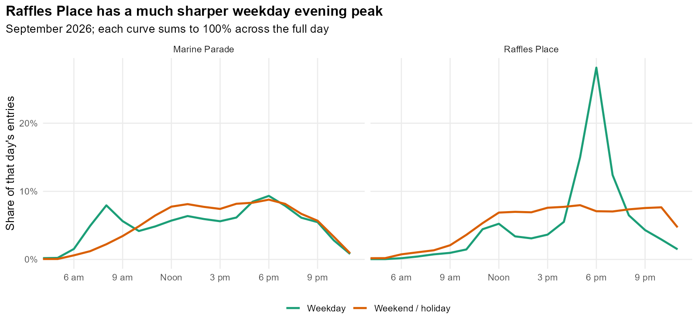
Raffles Place records 55.6% of its weekday entries between 5 pm and 8 pm. This fits its position in the office district: many passengers enter the railway after work. A count of office locations gives a small business and a large workplace the same weight. URA’s Downtown Core guidance describes Raffles Place as part of the predominantly commercial core.
Marine Parade has a broader pattern. It averages 12,677 entries per weekend or holiday, compared with 10,995 on weekdays. Its shops and food outlets support activity throughout the week, but their presence alone tells us little about how many visitors arrive by rail. The station opened with TEL Stage 4 in June 2024. LTA’s opening announcement
4.8 What drives Marine Parade’s overprediction?
To understand the remaining gap, I return to the model with 38.4% error and split its predictions into journeys assigned to residents and journeys assigned to facilities. Each station’s own counts are still left out when fitting its prediction.
diagnostics$contributions %>%
group_by(station_id, kind) %>%
summarise(entries = sum(entries), .groups = "drop") %>%
pivot_wider(names_from = kind, values_from = entries) %>%
left_join(sf::st_drop_geometry(ridership$observed) %>% select(station_id, station), by = "station_id") %>%
transmute(Station = station,
Residents = fmt(residential), Activities = fmt(activity)) %>%
knitr::kable(caption = "Sources of predicted entries before adding office area.")| Station | Residents | Activities |
|---|---|---|
| Marine Parade | 6,016 | 38,641 |
| Raffles Place | 3,904 | 15,422 |
Facilities account for 86.5% of Marine Parade’s prediction. Just two nearby grid cells containing facilities contribute about 20,668 entries per weekday, already more than the station’s recorded total. The many mapped shops and outlets cause the model to assign too many journeys here.
The locations of private homes are still approximate. Even so, residents account for only 6,016 predicted entries here. The larger share of the overestimate comes from treating facility counts as a guide to how many rail journeys start nearby.
4.9 Office area gives a first improvement
That leads to two possible adjustments. First, I let office locations carry a different weight from other facilities. Second, I use office buildings’ ground area, so larger buildings can contribute more journeys. The station-choice calculation and five test groups stay the same, allowing a direct comparison.
The origin_weights() function shown earlier combines the distributions of facilities, office area and residents. The model learns their weights from the stations used for fitting. Ground area is only a rough guide to workplace size: a tall office tower can occupy a small plot. Only 171 of the 282 buildings have a recorded floor count, so I use ground area consistently across them.
diagnostics$comparison %>%
transmute(Adjustment, MAE = fmt(MAE), RMSE = fmt(RMSE), WAPE = pct(WAPE)) %>%
knitr::kable()| Adjustment | MAE | RMSE | WAPE |
|---|---|---|---|
| Before office adjustment | 6,335 | 9,645 | 38.4% |
| Separate office counts | 6,517 | 10,156 | 39.5% |
| Add office footprint area | 6,059 | 9,000 | 36.7% |
Separating office counts raises error to 39.5%. Office footprint area lowers it to 36.7%, with improvement in all five original groups. It gives Raffles Place more weight, but leaves substantial error at both stations.
diagnostics$predictions %>% filter(station_id %in% c("RAFFLESPLACE", "MARINEPARADE"),
Adjustment != "Separate office counts") %>%
left_join(sf::st_drop_geometry(ridership$observed) %>% select(station_id, station), by = "station_id") %>%
select(Station = station, Observed = observed, Adjustment, predicted) %>%
pivot_wider(names_from = Adjustment, values_from = predicted) %>%
mutate(across(where(is.numeric), fmt)) %>% knitr::kable()| Station | Observed | Before office adjustment | Add office footprint area |
|---|---|---|---|
| Marine Parade | 10,995 | 44,657 | 39,091 |
| Raffles Place | 65,290 | 19,326 | 30,059 |
4.10 What changes when we use workplace counts?
Building size is still an indirect guide to employment. SingStat’s General Household Survey 2025 lets us use worker counts instead. Downtown Core has 332,600 employed residents working there; Marine Parade has 12,100. The chart compares their shares of workers with their shares of mapped facilities.
employment_chart <- employment_comparison %>% filter(planning_area %in% shown) %>%
mutate(planning_area = factor(str_to_title(planning_area), levels = str_to_title(planning_area[order(workers)]))) %>%
pivot_longer(c(poi_share, worker_share), names_to = "measure", values_to = "share") %>%
mutate(measure = recode(measure, poi_share = "Mapped activity POIs", worker_share = "Employed residents at workplaces")) %>%
ggplot(aes(share, planning_area, fill = measure)) +
geom_col(position = position_dodge(width = 0.75), width = 0.65) +
scale_fill_brewer(palette = "Dark2") + scale_x_continuous(labels = scales::label_percent()) +
labs(x = "Share of the respective mapped total", y = NULL, fill = NULL,
title = "Facility counts and employment describe different distributions",
subtitle = "2025 workplace counts for 44 named planning areas; 2026 OSM activity locations")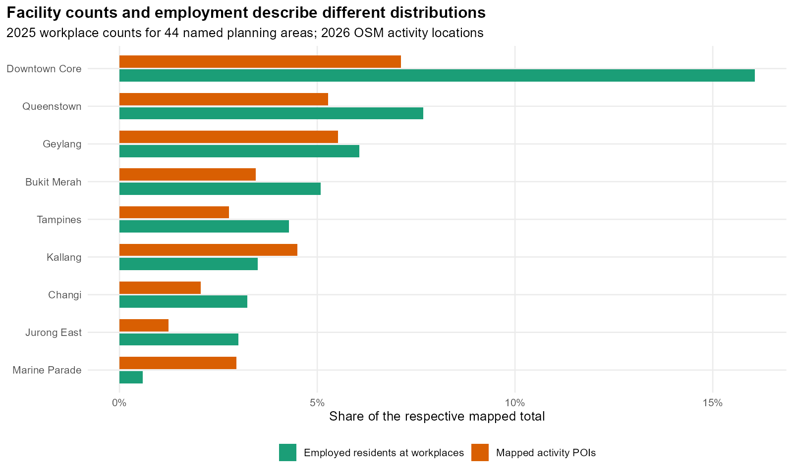
Downtown Core contains 16.1% of the workers in the named planning areas we can map, compared with 7.1% of the facilities. Marine Parade has 3.0% of the facilities but only 0.6% of these workers. This helps explain the earlier problem: counting every facility equally gives areas with many small outlets a large share of estimated journeys.
The survey gives worker totals for planning areas, not individual buildings. Within each area, I spread workers across the facility locations, giving cells with more facilities more workers. This keeps the published totals unchanged, but still estimates where workers are within an area. Areas without their own reported worker count continue to contribute journeys through residents and general activities.
context$allocation %>%
filter(planning_area %in% c("DOWNTOWN CORE", "MARINE PARADE")) %>%
knitr::kable(digits = 0, caption = "Published and allocated workplace totals agree.")| planning_area | workers | allocated |
|---|---|---|
| DOWNTOWN CORE | 332600 | 332600 |
| MARINE PARADE | 12100 | 12100 |
I replace office area with these worker counts in the model. Residents receive 35.7% of the weight used to distribute journeys. Of the remaining activity weight, 76.1% goes to worker counts. These are fitted weights for where journeys start, not measured percentages of home or work trips.
ridership$validation %>%
filter(model %in% c(7, 8), station_id %in% c("RAFFLESPLACE", "MARINEPARADE")) %>%
left_join(sf::st_drop_geometry(ridership$observed) %>% select(station_id, station), by = "station_id") %>%
mutate(model = if_else(model == 7, "Office area", "Workplace counts")) %>%
select(Station = station, Observed = observed, model, predicted) %>%
pivot_wider(names_from = model, values_from = predicted) %>%
mutate(across(where(is.numeric), fmt)) %>% knitr::kable()| Station | Observed | Office area | Workplace counts |
|---|---|---|---|
| Marine Parade | 10,995 | 39,091 | 23,355 |
| Raffles Place | 65,290 | 30,059 | 26,634 |
Marine Parade’s prediction falls considerably, though it is still too high. Raffles Place becomes less accurate. Knowing Downtown Core’s worker total helps describe the area, but does not tell us how those workers are spread around its many stations. Within each planning area, the model still relies on facility counts and treats small outlets and large workplaces alike.
4.11 Do direct buses explain Marine Parade’s remaining gap?
Another possibility at Marine Parade is that some people take a direct bus instead of a train. I identify bus services that stop within 500 metres of each station and later reach Downtown Core. Each regular service is counted once. I use the middle of its published daytime interval range to estimate departures per hour, leaving out peak-only services and shortened route variants.
context$station_routes %>%
filter(station_id == "MARINEPARADE", radius == 500) %>%
transmute(Service = ServiceNo, `Boarding stop` = BusStopCode,
`Daytime interval (minutes)` = AM_Offpeak_Freq) %>%
knitr::kable()| Service | Boarding stop | Daytime interval (minutes) |
|---|---|---|
| 10 | 92119 | 09-16 |
| 12 | 92119 | 09-14 |
| 14 | 92119 | 11-19 |
| 16 | 92181 | 10-25 |
| 196 | 92049 | 08-13 |
| 197 | 92049 | 11-17 |
| 32 | 92119 | 15-18 |
| 36 | 92049 | 08-11 |
| 48 | 92049 | 07-16 |
Marine Parade has 9 regular services offering a direct trip into Downtown Core, equivalent to roughly 43 departures per hour when the frequency midpoints are added. The map follows two of them as far as their first Downtown Core stop. SBS Transit service 196 is one example serving Marine Parade station and Parkway Parade.
bus_map <- ggplot() +
geom_sf(data = prepared$subzones, fill = "grey97", colour = "grey85", linewidth = 0.2) +
geom_sf(data = cbd, fill = "#f3e6c6", colour = "grey75", linewidth = 0.2) +
geom_path(data = paths, aes(x, y, colour = ServiceNo, group = ServiceNo), linewidth = 1.1) +
geom_point(data = paths, aes(x, y, colour = ServiceNo), size = 1.3) +
geom_sf(data = rail_examples, shape = 23, size = 3, fill = "white") +
geom_sf_text(data = rail_examples, aes(label = station), nudge_y = -300, size = 3.4) +
scale_colour_brewer(palette = "Dark2") +
coord_sf(xlim = range(paths$x) + c(-1000, 1000), ylim = range(c(paths$y, st_coordinates(rail_examples)[, 2])) + c(-800, 800), datum = NA) +
labs(x = NULL, y = NULL, colour = "Bus service", title = "Two direct bus options from Marine Parade to Downtown Core",
subtitle = "Lines join successive stops; shaded area is Downtown Core. Route snapshot: 4 November 2026.")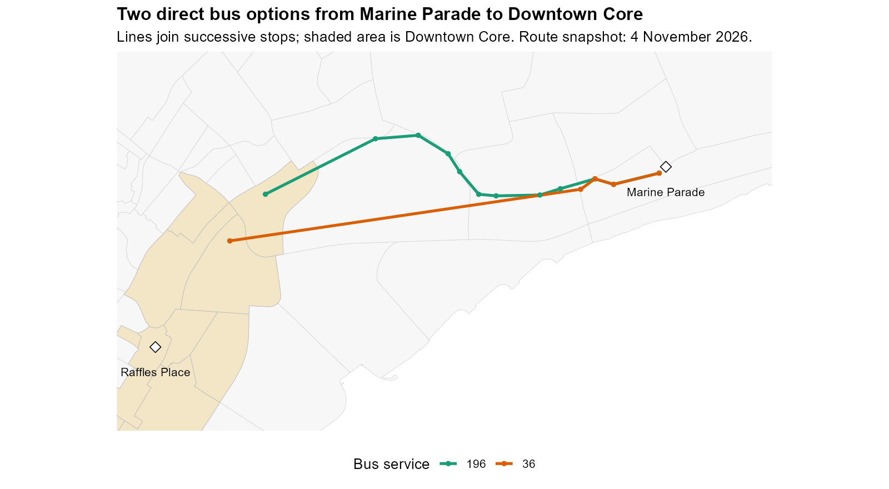
I let the model reduce a station’s attraction where direct CBD buses are more frequent, using the same rule across stations. This raises the office-area model’s error to 37.1%. With worker counts included, the fitted bus-competition effect is zero in all five tests, leaving WAPE at 34.7%. I therefore keep the worker-count model without this extra adjustment.
Marine Parade clearly has direct bus alternatives, but their frequency alone does not improve these predictions. Passengers also consider where they are going, the time taken by each option and how easily they can reach the stops. A measure of daytime CBD services leaves out much of that choice, especially for trips elsewhere in Singapore.
4.12 Does the employment improvement hold elsewhere?
The improvement also holds when I regroup nearby stations using Ward clustering. With these different test groups, error falls from 40.0% using office area to 35.7% using workers. Both sets of groups helped choose the model. Against August counts at the same stations, error is 31.5%, close to the 32.0% September error when the model is checked against the data it was fitted to.
The predictions also tend to put busier and quieter stations in the right order. Their Spearman rank correlation with recorded entries is 0.89, where one would mean exactly the same ranking. That makes the model useful for comparing station roles, while the sizeable count errors remain important when reading individual forecasts. Distance from homes to stations can be checked separately, without the ridership model.
5 What changes with JRL and CRL
5.1 Compare the four networks
With these strengths and weaknesses in mind, I compare four networks: today’s stations, JRL added, CRL Phase 1 added, and both lines added. Each version has the same number of journeys. The model changes which stations those journeys use as new stations become available and existing interchanges gain connections.
details$scenarios %>%
mutate(scenario = factor(scenario, levels = c("Existing", "JRL", "CRL", "Both"))) %>%
arrange(scenario) %>%
transmute(Network = scenario, `New locations` = new_locations,
`Entries at new locations` = estimate(new_entries),
`Share of entries` = pct(new_share), `Changed catchments` = changed_origins) %>%
knitr::kable()| Network | New locations | Entries at new locations | Share of entries | Changed catchments |
|---|---|---|---|---|
| Existing | 0 | 0 | 0.0% | 0 |
| JRL | 21 | 169,300 | 5.6% | 24 |
| CRL | 8 | 81,800 | 2.7% | 21 |
| Both | 29 | 249,700 | 8.2% | 45 |
With both lines, the new station locations receive about 249,700 daily entries, or 8.2% of the unchanged total. Adding both lines gives a slightly smaller new-station total than adding their separate estimates together. That is because passengers choose among all the stations in the combined network.
Choose a network in the upper-right corner. Select a station to see its estimated entries, or a subzone to see its most likely station. Darker shading means the leading station receives a larger share of that subzone’s estimated journeys. Grey areas have no modelled journeys from residents or activities.
5.2 New stations and nearby alternatives
ranges <- ridership$sensitivity %>% filter(scenario == "Both", check != "Residential demand only") %>% group_by(station_id) %>%
summarise(low = min(predicted), high = max(predicted), .groups = "drop")
residential <- ridership$sensitivity %>% filter(scenario == "Both", check == "Residential demand only") %>%
select(station_id, residential = predicted)
new_chart <- ridership$predictions %>% filter(scenario == "Both", !existing) %>%
left_join(ranges, by = "station_id") %>%
left_join(residential, by = "station_id") %>%
mutate(line = if_else(startsWith(codes, "J"), "JRL", "CRL Phase 1")) %>%
ggplot(aes(predicted, reorder(station, predicted))) +
geom_errorbar(aes(xmin = low, xmax = high), orientation = "y", width = 0.25, colour = "grey60") +
geom_point(aes(colour = line), size = 2) +
geom_point(aes(x = residential, colour = line), shape = 1, size = 2) +
scale_colour_brewer(palette = "Dark2", name = NULL) +
scale_x_continuous(labels = scales::label_comma()) +
labs(x = "Estimated average weekday entries", y = NULL, title = "Potential boardings at new stations",
subtitle = "Filled: selected model. Hollow: residents only. Bars: buffer and distance-floor checks.")
Serangoon North has the highest estimate among the new locations, at about 18,300 weekday entries. Pasir Ris East also ranks highly, while Nanyang Crescent leads the JRL locations. Filled dots show the selected model. The narrow bars show what changes when I vary the distance used to count bus stops or the minimum distance in the model. Hollow dots show a larger change: distributing journeys using residents alone.
Nanyang Crescent falls from about 11,800 to 6,400 entries when only residents determine where journeys start. Much of its main estimate therefore comes from activity around the campus. Serangoon North stays first in both versions. The chart shows how the estimates change under different assumptions; its bars are not confidence intervals.
5.3 Which stations have the lowest estimates?
quiet_stations %>%
transmute(Station = station, `Estimated entries/day` = estimate(predicted)) %>% knitr::kable()| Station | Estimated entries/day |
|---|---|
| Aviation Park | 2,400 |
| Tengah | 3,000 |
| Jurong Pier | 4,000 |
| Loyang | 4,800 |
| Jurong Hill | 5,000 |
| Enterprise | 5,100 |
Aviation Park, Tengah and Jurong Pier have the lowest estimates. For comparison, half of existing MRT stations record fewer than 15,391 weekday entries, and the quietest tenth record about 4,717 or fewer. These figures give context; they are not rules for deciding when a station should open.
These locations need closer study. Resident worker counts give only part of the picture around industrial and airport areas. Tengah’s housing matches are incomplete, and the forecasts keep development at its current level. Alongside the errors at recently opened stations, these gaps mean a low estimate is a reason to gather better local evidence before making an opening decision.
5.4 Existing stations gain connections and competition
changes_chart <- ridership$predictions %>% filter(scenario == "Both", existing) %>%
slice_max(abs(change), n = 12) %>% ggplot(aes(change, reorder(station, change), fill = change > 0)) +
geom_col(width = 0.7) + geom_vline(xintercept = 0, colour = "grey50") +
scale_fill_brewer(palette = "Set2", guide = "none") + scale_x_continuous(labels = scales::label_comma()) +
labs(x = "Change in estimated weekday entries", y = NULL, title = "Where existing stations could gain or lose boardings")
| Station | Baseline estimate | With both lines | Change | Change (%) |
|---|---|---|---|---|
| Pioneer | 41,300 | 15,300 | -25,900 | -62.9% |
| Lakeside | 32,500 | 14,100 | -18,300 | -56.4% |
| Hougang | 33,100 | 47,200 | 14,100 | 42.5% |
| Chinese Garden | 23,300 | 9,600 | -13,700 | -58.8% |
| Jurong East | 66,600 | 54,200 | -12,300 | -18.5% |
The largest shift is at Pioneer, with about 25,900 fewer predicted daily entries (62.9%). The largest gain is at Hougang, with about 14,100 more (42.5%). New stations give passengers alternatives to Pioneer. Hougang gains an extra rail line, which raises its attraction score in the model. I check how much that assumption matters next.
Both sides of this comparison use model predictions: the existing network and the expanded network. This keeps the original prediction error out of the calculation of change. The counts cover people entering the railway, so passengers transferring between lines inside a station are excluded. Assessing platform crowding would need those transfers too.
5.5 Does Hougang’s gain depend on the extra line?
I run the expansion again with the same 29 new locations, but give existing stations no extra attraction for gaining a line. Their line counts stay at today’s values in the calculation. Everything else stays the same. This separates the effect of new nearby stations from the extra weight given to upgraded interchanges.
review$interchanges %>%
transmute(Station = station, `Full expansion: change` = estimate(change),
`Without line-count uplift: change` = estimate(fixed_change)) %>% knitr::kable()| Station | Full expansion: change | Without line-count uplift: change |
|---|---|---|
| Ang Mo Kio | 9,500 | -6,200 |
| Boon Lay | -6,600 | -18,000 |
| Bright Hill | 7,800 | -1,300 |
| Choa Chu Kang | -1,000 | -12,700 |
| Hougang | 14,100 | -5,000 |
| Jurong East | -12,300 | -25,800 |
| Pasir Ris | 4,300 | -8,900 |
Hougang changes from a gain of 14,100 entries to a loss of 5,000. Its predicted gain relies heavily on the model assuming that an extra line draws more people to enter there. That rule comes from comparing today’s stations. Existing interchanges also differ in their surroundings and position in the network, so their boarding counts cannot tell us exactly what an extra line alone will do.
The two versions show how much the result depends on this assumption. Actual entries could fall outside either estimate, depending on how passengers use the new connections. Transfers within the railway remain outside these entry counts.
5.6 A closer look at Yunnan and Pioneer
choices <- details$catchments %>% select(origin_id, scenario, station_id, active) %>%
pivot_wider(names_from = scenario, values_from = station_id) %>%
mutate(changed = case_when(!active ~ "No modelled origin demand",
Existing == Both ~ "Same most likely station",
TRUE ~ "Different most likely station"))
catchment_map <- subzones %>% left_join(choices, by = "origin_id") %>% ggplot() +
geom_sf(aes(fill = changed), colour = "white", linewidth = 0.15) +
geom_sf(data = new_stations, size = 0.8) +
scale_fill_manual(values = c("Different most likely station" = "#1b9e77",
"Same most likely station" = "#e6eee9", "No modelled origin demand" = "grey85")) + coord_sf(datum = NA) +
labs(x = NULL, y = NULL, fill = NULL, title = "Where the most likely station changes",
subtitle = "Subzone-level Huff probabilities; both proposed lines added")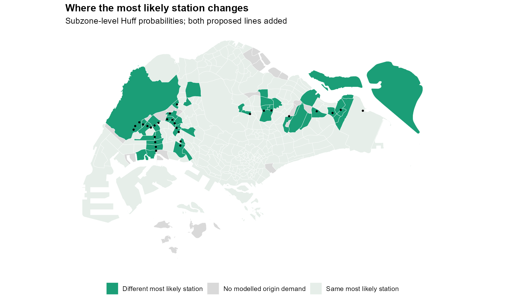
These station changes also affect which areas each station serves. The most likely choice changes in 45 of 311 subzones with estimated journeys. Each subzone combines choices from its different starting locations. Even where the leading station stays the same, other stations can still gain part of the neighbourhood’s journeys.
Yunnan (Jurong West) contributes most to the predicted change at Pioneer. Looking at the choices within this subzone helps explain the loss: different parts of the neighbourhood can favour different nearby stations once the new line opens.
local_probabilities <- details$local_choices %>% select(station, scenario, probability) %>%
complete(station, scenario, fill = list(probability = 0)) %>%
mutate(scenario = factor(scenario, levels = c("Existing", "Both"),
labels = c("Existing network", "With both lines")))
local_choice_chart <- ggplot(local_probabilities, aes(probability, reorder(station, probability), colour = scenario)) +
geom_line(aes(group = station), colour = "grey75") + geom_point(size = 3) +
scale_colour_brewer(palette = "Dark2") + scale_x_continuous(labels = scales::label_percent()) +
labs(x = "Modelled station-choice probability", y = NULL, colour = NULL,
title = paste("How station choices change in", str_to_title(details$local_origin$subzone)),
subtitle = "Selected alternatives; unopened stations have zero probability in the baseline")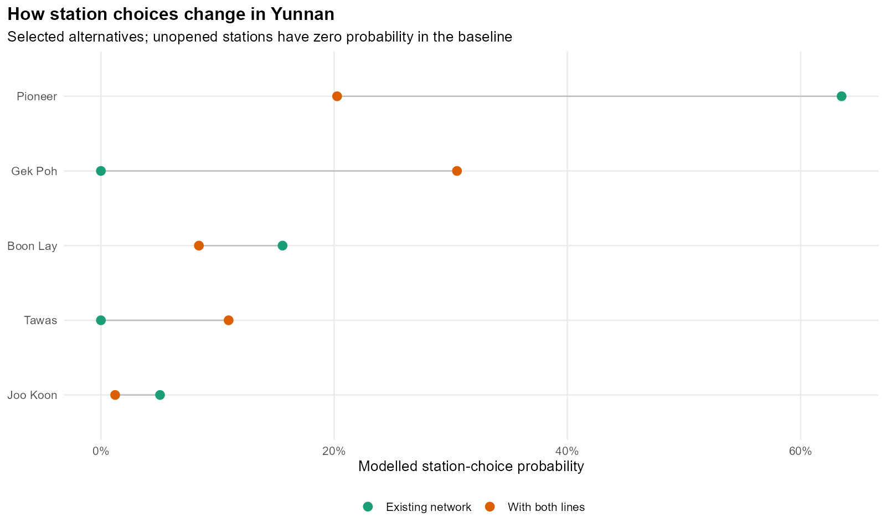
Pioneer’s share of this subzone’s estimated journeys falls from 63.5% to 20.3%. Gek Poh becomes the leading choice. The passenger’s final destination could change that choice, however. Someone heading to the CBD may prefer an EWL station to a closer JRL station that requires a transfer. The model leaves out this part of the journey, so Pioneer’s predicted loss needs checking against actual travel routes.
Map Pioneer’s catchment (R)
probabilities <- map_dfr(c("Existing", "Both"), function(network) {
stations <- prepared$stations[[network]]
tibble(origin_id = prepared$origins$origin_id, scenario = network,
probability = ridership$probabilities[[network]][, match("PIONEER", stations$station_id)])
})
active <- analysis$details$catchments %>% filter(scenario == "Both") %>% select(origin_id, active)
pioneer <- prepared$stations$Existing %>% filter(station_id == "PIONEER")
areas <- prepared$subzones[st_intersects(prepared$subzones, st_buffer(pioneer, 5000), sparse = FALSE)[, 1], ] %>%
left_join(probabilities, by = "origin_id", relationship = "many-to-many") %>%
left_join(active, by = "origin_id") %>%
mutate(probability = if_else(active, probability, NA_real_),
scenario = factor(scenario, c("Existing", "Both"), c("Existing network", "With both lines")))
points <- map_dfr(c("Existing", "Both"), function(network)
prepared$stations[[network]] %>% filter(station_id %in% c("PIONEER", "BOONLAY", "GEKPOH", "TAWAS")) %>%
mutate(scenario = factor(network, c("Existing", "Both"), c("Existing network", "With both lines"))))
extent <- st_bbox(st_buffer(pioneer, 4500))
pioneer_map <- ggplot(areas) +
geom_sf(aes(fill = probability), colour = "white", linewidth = 0.2) +
geom_sf(data = points, size = 2) +
geom_label_repel(data = points, aes(label = station, geometry = geometry), stat = "sf_coordinates",
size = 3, seed = 626, min.segment.length = 0) +
scale_fill_distiller(palette = "Blues", direction = 1, limits = c(0, 1),
breaks = c(0, 0.5, 1), labels = scales::label_percent(), na.value = "grey85",
guide = guide_colourbar(barwidth = grid::unit(6, "cm"))) +
facet_wrap(~scenario) +
coord_sf(xlim = extent[c("xmin", "xmax")], ylim = extent[c("ymin", "ymax")], datum = NA) +
labs(fill = "Pioneer choice probability", x = NULL, y = NULL,
title = "How Pioneer's catchment changes",
subtitle = "Demand-weighted subzone probabilities; grey areas have no modelled demand")
The paired maps show the same change across nearby subzones. A lighter shade means a smaller share of journeys is assigned to Pioneer. This reveals changes that a map of the leading station alone would hide: Pioneer can stay first in a subzone while sharing more of its journeys with new alternatives.
6 Which neighbourhoods gain closer access
The ridership model tells us where journeys might shift. A separate question is easier to measure directly: how much closer would homes be to a station? This value-added analysis compares that distance across neighbourhoods, including those with more older HDB residents. It can identify benefits even at stations with modest boarding estimates.
6.1 From the home to the nearest station
I measure the straight-line distance from each mapped residential block to its nearest MRT or LRT station. A block with more homes counts more in the average, so the result represents the average distance per mapped home. This measures how close the station is on a map. Actual walking routes also depend on entrances, crossings and barriers, while the onward train journey needs a separate calculation.
nearest <- st_nearest_feature(prepared$buildings, prepared$stations$Both)
distance_m <- as.numeric(st_distance(
prepared$buildings, prepared$stations$Both[nearest, ], by_element = TRUE
))
tibble(`Distance to nearest station (m)` = head(distance_m, 3)) %>%
knitr::kable(digits = 0)| Distance to nearest station (m) |
|---|
| 439 |
| 575 |
| 739 |
I repeat this for the four networks using the same homes each time. Adding stations can only leave the nearest distance unchanged or make it shorter, which provides a useful check on the calculation.
local_access <- subzones %>% left_join(prepared$local_access %>% select(origin_id, gain_m), by = "origin_id")
access_map <- ggplot(local_access) +
geom_sf(aes(fill = gain_m), colour = "white", linewidth = 0.15) +
geom_sf(data = new_stations, size = 0.8, colour = "grey20") +
scale_fill_viridis_c(option = "C", na.value = "grey90", breaks = scales::breaks_pretty(n = 3),
labels = scales::label_number(suffix = " m", big.mark = ","),
guide = guide_colourbar(barwidth = grid::unit(6, "cm"))) +
coord_sf(datum = NA) + labs(fill = "Mean distance saved", x = NULL, y = NULL,
title = "How much closer would the nearest station be?",
subtitle = "JRL and CRL Phase 1 combined; averages weighted by mapped HDB dwellings")
With both lines, the share of mapped HDB dwellings within 800 metres rises from 72.8% to 81.9%, a gain of 9.1 percentage points. Grey subzones have no matched residential blocks in this sample.
coverage <- prepared$coverage %>%
mutate(scenario = factor(scenario, levels = c("Existing", "JRL", "CRL", "Both")),
threshold = factor(threshold, levels = c(400, 800, 1200), labels = c("400 metres", "800 metres", "1,200 metres")))
coverage_chart <- ggplot(coverage, aes(scenario, share, fill = threshold)) +
geom_col(position = position_dodge(width = 0.8), width = 0.7) +
geom_text(aes(label = scales::percent(share, accuracy = 0.1)),
position = position_dodge(width = 0.8), vjust = -0.5, size = 3) +
scale_fill_brewer(palette = "Blues", direction = -1) +
scale_y_continuous(labels = scales::label_percent(), limits = c(0, 1.08), breaks = seq(0, 1, 0.2)) +
labs(x = NULL, y = "Share of mapped HDB dwellings", fill = "Distance to nearest station",
title = "More homes within reach of a station",
subtitle = "Straight-line distances to station locations")
The 400, 800 and 1,200-metre comparisons show how the gain changes with our definition of “close”. A home already beside an LRT station may gain little in this distance measure, even if a new MRT line makes the rest of its journey easier.
6.2 Places with the largest improvements
local_chart <- prepared$local_access %>% slice_max(gain_m, n = 8, with_ties = FALSE) %>%
left_join(st_drop_geometry(subzones) %>% select(origin_id, planning_area), by = "origin_id") %>%
mutate(place = paste0(str_to_title(subzone), " (", str_to_title(planning_area), ")")) %>%
ggplot(aes(gain_m, reorder(place, gain_m))) +
geom_col(fill = "#237a83", width = 0.65) +
geom_text(aes(label = paste0(round(gain_m), " m")), hjust = -0.15, size = 3.5) +
scale_x_continuous(expand = expansion(mult = c(0, 0.18))) +
labs(x = "Mean distance saved per mapped dwelling (metres)", y = NULL,
title = "The largest improvements in neighbourhood access",
subtitle = "Both proposed lines added to the existing network")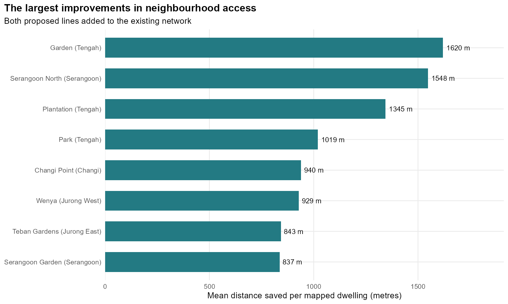
The largest improvement is in Garden (Tengah). Across its 1,769 mapped homes, the nearest station becomes an average of 1,620 metres closer. The remaining average distance is 371 metres.
local_blocks <- prepared$buildings %>% filter(origin_id == details$top_access$origin_id) %>%
left_join(prepared$access %>% filter(scenario == "Both") %>% select(address_key, gain_m), by = "address_key")
local_stations <- stations$Both %>% filter(station %in% details$local_housing$nearest_station) %>%
mutate(status = if_else(existing, "Existing", "New"))
extent <- st_bbox(st_buffer(st_union(c(st_geometry(local_blocks), st_geometry(local_stations))), 500))
local_housing_map <- ggplot() +
geom_sf(data = subzones, fill = "grey96", colour = "grey80", linewidth = 0.3) +
geom_sf(data = local_blocks, aes(colour = gain_m), size = 2) +
geom_sf(data = local_stations, aes(shape = status), size = 3, colour = "grey20") +
geom_sf_text(data = local_stations, aes(label = station), nudge_y = 150, size = 3.2) +
scale_colour_viridis_c(option = "C", breaks = scales::breaks_pretty(n = 3),
labels = scales::label_number(suffix = " m", big.mark = ","),
guide = guide_colourbar(barwidth = grid::unit(6, "cm"))) +
coord_sf(xlim = extent[c("xmin", "xmax")], ylim = extent[c("ymin", "ymax")], datum = NA) +
labs(x = NULL, y = NULL, colour = "Distance saved", shape = "Station",
title = paste("Closer stations for", str_to_title(details$top_access$subzone),
paste0("(", str_to_title(details$top_access$planning_area), ")")),
subtitle = "Matched residential blocks and their nearest stations before and after expansion")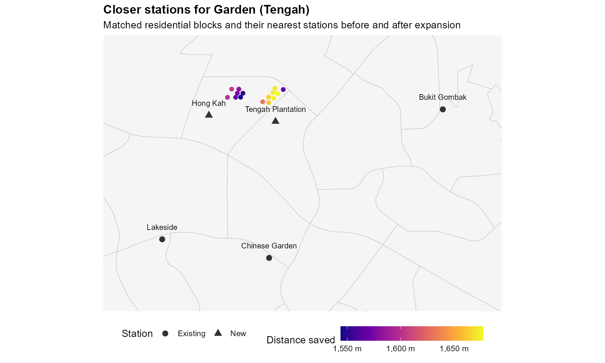
These homes are currently closest to Bukit Gombak, Chinese Garden or Lakeside. With JRL, Hong Kah and Tengah Plantation become their nearest stations. The map explains the large gain: the new stations sit much closer to this group of homes. The next practical step is to check the routes to their entrances, including crossings and sheltered links.
6.3 Neighbourhoods with more older residents
Do neighbourhoods with more older residents gain as much? I sort subzones by the share of HDB residents aged 65 and above, then divide them into four groups. Each group has roughly the same number of subzones, but different numbers of homes. I calculate the average distance per mapped home within each group. This describes access in those neighbourhoods, rather than how individual older residents travel.
equity_chart <- prepared$equity %>% filter(scenario %in% c("Existing", "Both")) %>%
mutate(scenario = factor(scenario, levels = c("Existing", "Both"), labels = c("Existing network", "With both lines"))) %>%
ggplot(aes(age_group, mean_distance, colour = scenario, group = age_group)) +
geom_line(colour = "grey70", linewidth = 1) + geom_point(size = 3) +
scale_colour_brewer(palette = "Dark2") +
coord_flip() + labs(x = "Subzones grouped by the share of HDB residents aged 65+",
y = "Mean distance to nearest station (metres)", colour = NULL,
title = "Do older neighbourhoods receive similar improvements?")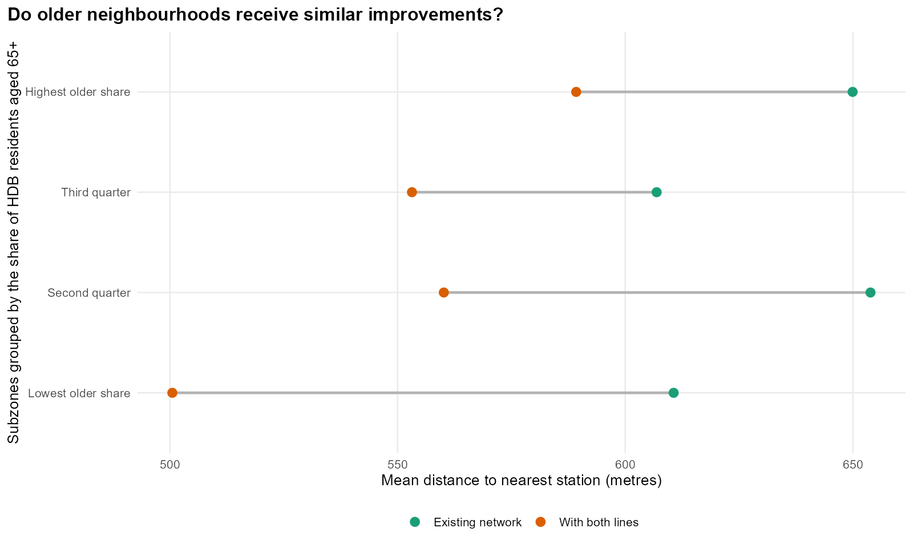
In the group with the largest share of older residents, stations become an average of 61 metres closer per mapped home. The group with the smallest older-resident share gains 110 metres. Their remaining average distances are 589 and 501 metres respectively. Of these two groups, the one with more older residents gains less and remains farther from stations on average.
age_coverage %>%
transmute(Group = age_group, Subzones = subzones, Dwellings = fmt(dwellings),
`Within 800 m: existing` = pct(Existing), `With both lines` = pct(Both),
`Gain (percentage points)` = round(100 * gain, 1)) %>% knitr::kable()| Group | Subzones | Dwellings | Within 800 m: existing | With both lines | Gain (percentage points) |
|---|---|---|---|---|---|
| Lowest older share | 39 | 347,544 | 73.9% | 85.1% | 11.2 |
| Second quarter | 40 | 337,423 | 70.8% | 80.5% | 9.6 |
| Third quarter | 39 | 237,918 | 75.2% | 82.7% | 7.5 |
| Highest older share | 38 | 132,249 | 70.3% | 75.5% | 5.2 |
The share of homes within 800 metres improves in every group. It improves more in the group with the smallest older-resident share, so its lead over the group with the largest share grows from 3.5 to 9.6 percentage points. The two middle groups do not follow a steady age pattern, and the groups contain quite different numbers of homes. The clearest difference is between the two ends.
details$older_gaps %>% slice_head(n = 5) %>%
transmute(Subzone = str_to_title(subzone), `Mapped homes` = fmt(dwellings),
`Homes beyond 800 m` = fmt(beyond_800), `Mean distance (m)` = fmt(mean_distance)) %>%
knitr::kable(caption = "Remaining gaps in the highest older-resident-share group, with both lines.")| Subzone | Mapped homes | Homes beyond 800 m | Mean distance (m) |
|---|---|---|---|
| Bedok South | 11,221 | 4,984 | 728 |
| Clementi West | 4,439 | 4,439 | 1,218 |
| Telok Blangah Way | 3,910 | 3,910 | 1,190 |
| Chong Boon | 9,927 | 3,673 | 740 |
| Kembangan | 7,090 | 3,565 | 752 |
Within the group with the largest share of older residents, Bedok South has the most mapped homes still beyond 800 metres. In Clementi West and Telok Blangah Way, every matched home remains beyond that distance. The new lines therefore leave specific gaps where feeder buses and easier walks to stops could still help.
7 How sensitive are the results?
The comparisons above depend on choices about where journeys start and how people choose stations. I vary those choices here to see which ones change the results most.
7.1 Demand mix has the largest effect on new-station estimates
I fit the model again after changing the distance used to count nearby bus stops to 400 or 800 metres, and the minimum station distance to 50 or 250 metres. I also try placing all journeys according to where residents live. That last version keeps the station-connection rules but leaves activities out of the starting locations.
sensitivity_summary <- ridership$sensitivity %>%
left_join(st_drop_geometry(prepared$stations$Both) %>% select(station_id, station, existing), by = "station_id") %>%
filter(scenario == "Both", !existing) %>% group_by(check) %>%
summarise(new_entries = sum(predicted), new_share = new_entries / total,
leading_station = station[which.max(predicted)], .groups = "drop")| Check | Entries at new stations | Share of entries | Leading new station |
|---|---|---|---|
| 250 m distance floor | 245,800 | 8.1% | Serangoon North |
| 400 m bus buffer | 248,800 | 8.2% | Serangoon North |
| 50 m distance floor | 250,500 | 8.3% | Serangoon North |
| 800 m bus buffer | 249,500 | 8.2% | Serangoon North |
| Main model | 249,700 | 8.2% | Serangoon North |
| Residential demand only | 352,800 | 11.6% | Serangoon North |
Changing the bus-stop radius or minimum distance makes little difference: the new stations receive between 8.1% and 8.3% of journeys. Using residents alone raises their share to 11.6%. The bigger uncertainty is where journeys start throughout the day. Better information on those locations would help judge which estimate is more realistic.
7.2 A separate month and different access thresholds
Using the September model and journey total to predict August gives 31.5% WAPE. This checks another month at the same stations. The earlier 34.7% score is a harder check in a different sense: the model had to predict stations whose counts were left out of fitting.
August and September have similar station shares. Doing reasonably well across these months therefore tells us more about stability over time than about predicting unopened stations. The geographical tests and recent-station checks are more relevant to that question.
The housing result comes directly from distances, so it does not rely on the ridership model. The share of homes within 400 metres rises from 32.2% to 37.0%. Within 1,200 metres, it rises from 91.6% to 96.6%. All three distance cut-offs show an improvement, though the size of the gain changes.
7.3 Different groups of stations give different estimates
review$fold_scenarios %>%
transmute(`Training fit` = fold, `Share at new stations` = pct(new_share)) %>% knitr::kable()| Training fit | Share at new stations |
|---|---|
| 1 | 8.1% |
| 2 | 9.5% |
| 3 | 8.2% |
| 4 | 7.8% |
| 5 | 8.2% |
Each geographical test produced a slightly different set of model parameters. I use each set to predict the expanded network, keeping the total journeys unchanged. The new stations’ share ranges from 7.8% to 9.5%. That is a wider spread than changing the bus-stop radius or minimum distance. Which areas the model learns from matters too. Because the five versions use overlapping data, this range is not a confidence interval.
7.4 Limitations
- The model divides a fixed number of rail journeys among stations. It does not estimate extra journeys from future housing, or people switching from bus or car to rail.
- Adding a station keeps the relative odds between unchanged stations the same at each starting point. This is the Huff model’s independence-of-irrelevant-alternatives assumption. It leaves out shared routes, final destinations and the inconvenience of transfers.
- The model learns the apparent benefit of MRT service and extra lines from existing stations. Hougang shows how strongly a forecast can depend on carrying that relationship over to an upgrade.
- Distances are straight lines. Entrances, crossings and barriers can make the actual walk longer; 800 metres here is a map distance.
- The population and worker data leave out non-residents. Facilities are an approximate guide to activities, workplaces within each planning area are estimated, and some homes are missing from the map. We have not measured the separate effect of each gap on the errors.
- Both sets of geographical tests helped choose the model. Its broad station rankings are useful, but recent stations are still overestimated and nearby stations often have similar errors.
8 Findings and recommendations
8.1 What the comparisons suggest
The model improves when it distinguishes MRT from LRT-only stops, spreads starting locations within neighbourhoods and uses worker counts. Together, these changes reduce prediction error from 55.3% to 34.7%. Worker counts help particularly at Marine Parade. Raffles Place remains difficult because a total for Downtown Core gives little detail about where workers actually enter the railway. Direct CBD buses offer another possible explanation at Marine Parade, but adding their frequency does not improve the worker-count model.
For the expansion, Serangoon North has the highest estimate among new locations. Yunnan shows how nearby stations could share journeys that currently favour Pioneer. Hougang’s predicted gain turns into a loss when the extra weight for gaining a line is removed. These comparisons identify places worth studying more closely. The overestimates at recently opened stations mean that the entry counts still need better validation before being used to plan capacity.
The access comparison is more direct. The share of mapped homes within 800 metres rises from 72.8% to 81.9%. Garden gains substantially, while neighbourhoods with the largest share of older residents gain less. Their gap with the lowest-share group widens. These results cover the homes we could locate, with sizeable gaps in the housing matches in Tengah and Bukit Merah.
8.2 Where to follow up
- Check the walks from Garden’s mapped homes to Hong Kah and Tengah Plantation. Identify crossings, entrances and gaps in sheltered paths that could make the shorter map distance difficult to use.
- Check bus travel times and the walk to bus stops in Clementi West and Telok Blangah Way. All matched homes remain more than 800 metres from a station even with both lines.
- Study journeys from Yunnan to Pioneer, Gek Poh and Tawas before changing feeder routes. Include passengers’ final destinations and transfers to see which station actually offers the easier trip.
- Gather better information on where trips start around Serangoon North and Pasir Ris East before planning capacity from these estimates. At interchanges such as Hougang, count passengers transferring inside the station separately from those entering from outside.
9 Sources
- ISSS626 Take-home Exercise 3 handout
- LTA: The next phase of rail development, March 2026
- LTA: Circle Line 6
- LTA: Hume station opening, February 2025
- LTA DataMall: Static datasets
- LTA DataMall: Dynamic datasets
- LTA DataMall API documentation
- LTA: Station names and current codes
- Singapore train station coordinates
- SingStat: Geographic distribution
- URA: Master Plan 2019 subzone boundaries
- HDB: Existing buildings
- HDB: Property Information
- OpenStreetMap contributors, Geofabrik extract
- OpenStreetMap: Office buildings
- URA: Downtown Core urban design guidance
- LTA: TEL Stage 4 opening announcement, March 2024
- SingStat: Employed residents by planning area of workplace and industry, GHS 2025
- SingStat: General Household Survey 2025
- SBS Transit: Bus service 196
- MOM: Public holidays for 2026
- Zhu et al. (2021): Improved Huff model for estimating urban rail transit station catchment areas considering station choices
- Hands-on Exercise 8 and Hands-on Exercise 7
- MCI package: Huff probabilities and calibration